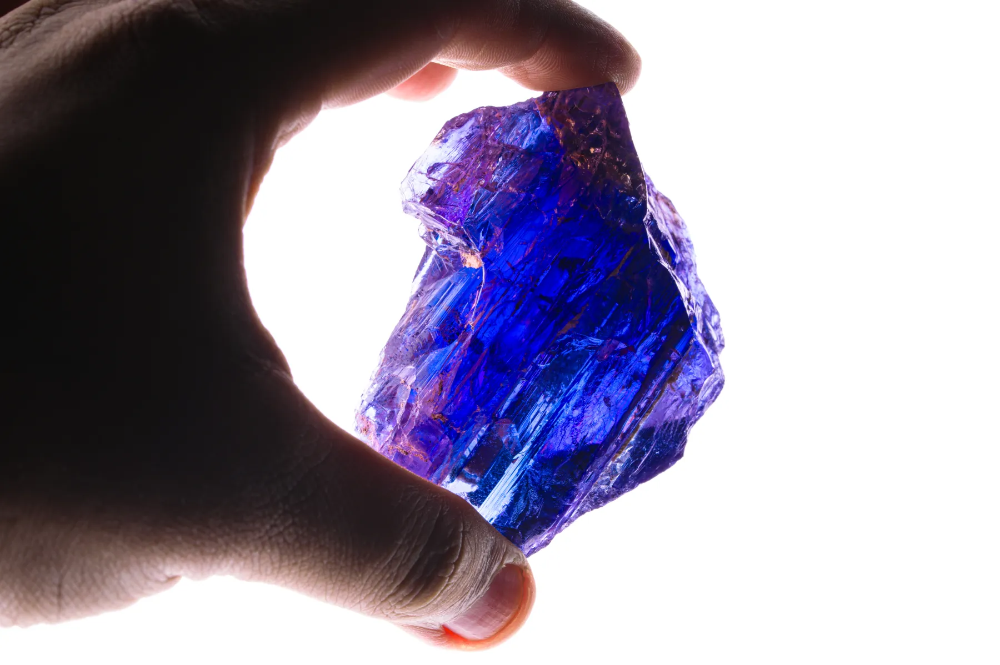
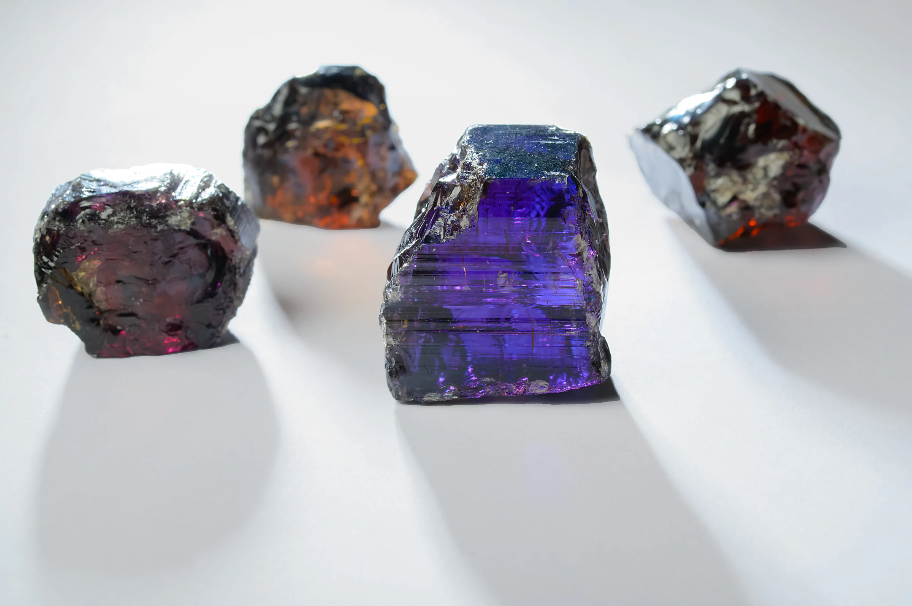
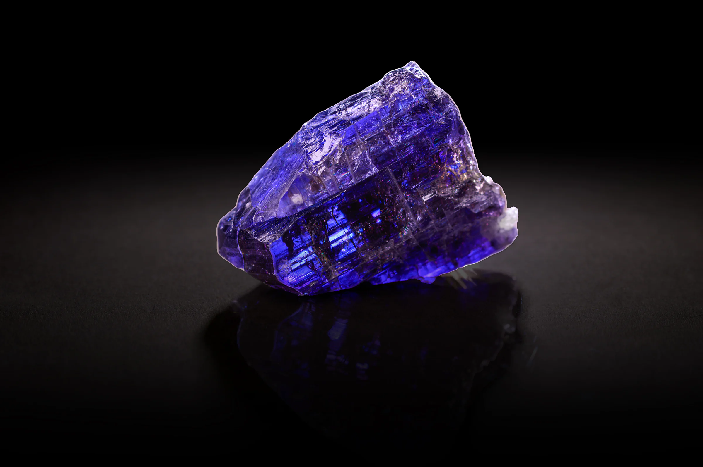
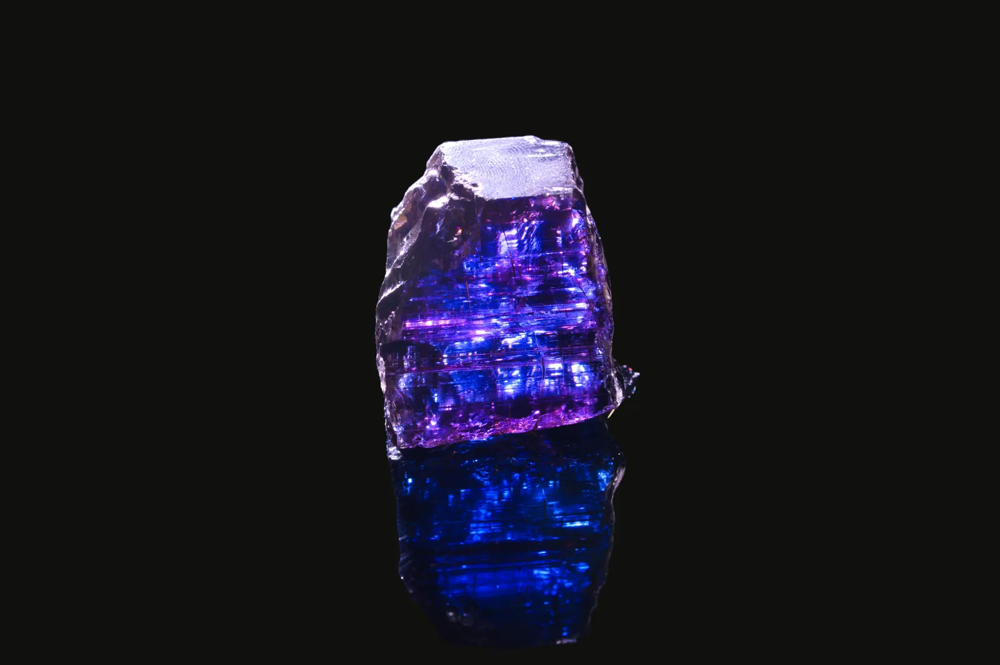
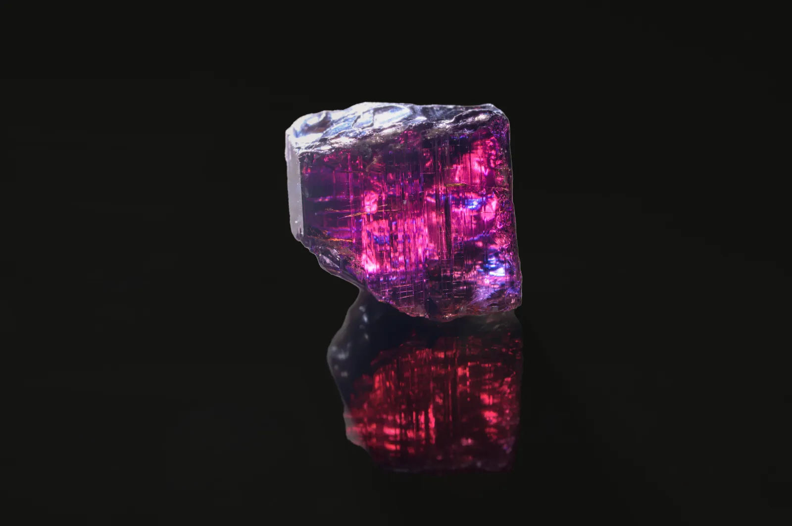
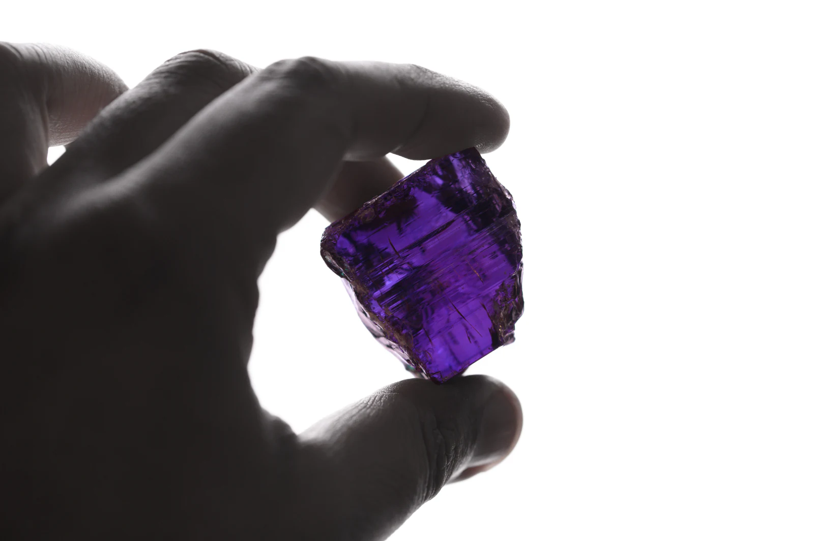
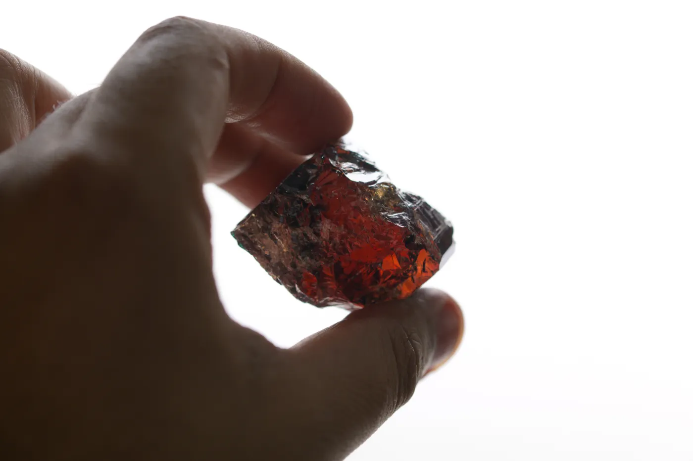
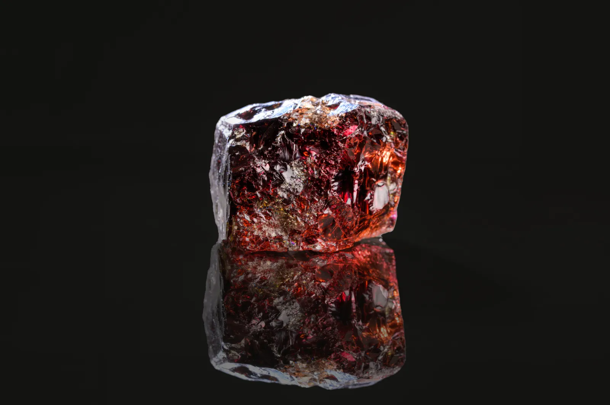

The Earth Moved
The Tanzanite's genesis lies in the tumultuous pan-African movement of tectonic plates, birthing a unique and precious stone.

In a moment of awe, the Maasai of Tanzania beheld a wonder that transformed the realm of the jewellery industry. A lightning bolt struck the earth, illuminating the rocks with a dazzling blue radiance, creating the rare and breathtaking Tanzanite precious stone.
The Tanzanite's genesis lies in the tumultuous pan-African movement of tectonic plates, birthing a unique and precious stone.
A lightning bolt struck the earth, illuminating the rocks with a dazzling blue radiance, creating the rare and breathtaking Tanzanite.
There is only one source of high-quality Tanzanite in the world: a few square kilometres at the foot of Kilimanjaro, in northern Tanzania.




Trichroic
[adjective]
Showing three different colours when seen from three different directions.
Tanzanite's spellbinding allure lies in its trichroic properties, displaying a range of captivating hues from blue to violet-blue, and even hints of burgundy.
Turn the stone — choose a colour

1,000×
Scarcer than diamonds
Words of the precious Tanzanite spread like wildfire, captivating people worldwide with its rarity. As there is only one source of high-quality Tanzanite, experts estimate that its supply may run out within a few decades, earning it the name of a “one-generation stone”.


The Maasai recognized its exceptional nature, sensing a potent energy emanating from the stone, resonating deeply within their souls.
For the Maasai, Tanzanite represented more than just a precious stone; it symbolised their link to the earth and the hidden beauty it holds.
As a cherished heirloom and December birthstone, it holds deep significance to the Maasai, who give it to women during childbirth.
In lithotherapy, it is believed to foster spiritual awareness, alleviate stress and anxiety, and promote inner harmony and self-expression. It connects the heart and the third eye chakras and can assist in truthful communication, making it a valuable stone for empaths and counsellors.
The jewellery world was enraptured by the Tanzanite's allure, and designers crafted exquisite pieces that highlighted its mesmerizing colour-changing characteristics.
On screen
The legendary necklace worn by Kate Winslet in Titanic.
At court
The Tanzanite tiara gifted to Queen Elizabeth II.

Gem story
Tanzania, a nation steeped in lore, tells it as the Maasai do: a thunderbolt came down from the heavens, struck the earth, and transmuted the rock into a glistening blue. That was the birth of tanzanite.
The other stones
Back to the World of Preciousness